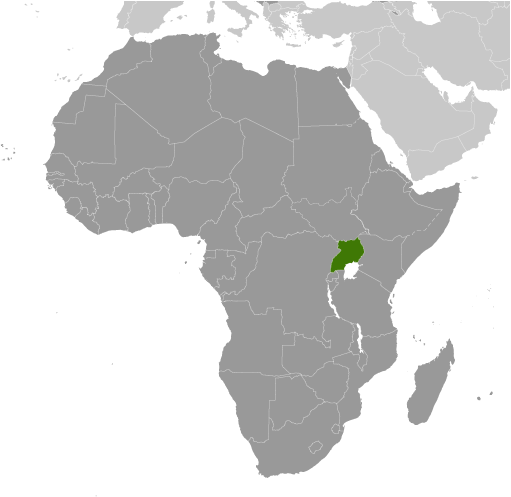
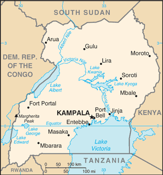

Africa :: UGANDA
Introduction :: UGANDA
-
The colonial boundaries created by Britain to delimit Uganda grouped together a wide range of ethnic groups with different political systems and cultures. These differences complicated the establishment of a working political community after independence was achieved in 1962. The dictatorial regime of Idi AMIN (1971-79) was responsible for the deaths of some 300,000 opponents; guerrilla war and human rights abuses under Milton OBOTE (1980-85) claimed at least another 100,000 lives. The rule of Yoweri MUSEVENI since 1986 has brought relative stability and economic growth to Uganda. A constitutional referendum in 2005 cancelled a 19-year ban on multi-party politics and lifted presidential term limits.
Geography :: UGANDA
-
East-Central Africa, west of Kenya, east of the Democratic Republic of the Congo1 00 N, 32 00 EAfricatotal: 241,038 sq kmland: 197,100 sq kmwater: 43,938 sq kmcountry comparison to the world: 81slightly smaller than Oregontotal: 2,729 kmborder countries (5): Democratic Republic of the Congo 877 km, Kenya 814 km, Rwanda 172 km, South Sudan 475 km, Tanzania 391 km0 km (landlocked)none (landlocked)tropical; generally rainy with two dry seasons (December to February, June to August); semiarid in northeastmostly plateau with rim of mountainsmean elevation: NAelevation extremes: lowest point: Lake Albert 621 mhighest point: Margherita Peak on Mount Stanley 5,110 mcopper, cobalt, hydropower, limestone, salt, arable land, goldagricultural land: 71.2%arable land 34.3%; permanent crops 11.3%; permanent pasture 25.6%forest: 14.5%other: 14.3% (2011 est.)140 sq km (2012)NAdraining of wetlands for agricultural use; deforestation; overgrazing; soil erosion; water hyacinth infestation in Lake Victoria; widespread poachingparty to: Biodiversity, Climate Change, Climate Change-Kyoto Protocol, Desertification, Endangered Species, Hazardous Wastes, Law of the Sea, Marine Life Conservation, Ozone Layer Protection, Wetlandssigned, but not ratified: Environmental Modificationlandlocked; fertile, well-watered country with many lakes and rivers
People and Society :: UGANDA
-
38,319,241note: estimates for this country explicitly take into account the effects of excess mortality due to AIDS; this can result in lower life expectancy, higher infant mortality, higher death rates, lower population growth rates, and changes in the distribution of population by age and sex than would otherwise be expected (July 2016 est.)country comparison to the world: 36noun: Ugandan(s)adjective: UgandanBaganda 16.5%, Banyankole 9.6%, Basoga 8.8%, Bakiga 7.1%, Iteso 7%, Langi 6.3%, Bagisu 4.9%, Acholi 4.4%, Lugbara 3.3%, other 32.1% (2014 est.)English (official national language, taught in grade schools, used in courts of law and by most newspapers and some radio broadcasts), Ganda or Luganda (most widely used of the Niger-Congo languages, preferred for native language publications in the capital and may be taught in school), other Niger-Congo languages, Nilo-Saharan languages, Swahili, ArabicProtestant 45.1% (Anglican 32.0%, Pentecostal/Born Again/Evangelical 11.1%, Seventh Day Adventist 1.7%, Baptist .3%), Roman Catholic 39.3%, Muslim 13.7%, other 1.6%, none 0.2% (2014 est.)Uganda has one of the youngest and most rapidly growing populations in the world; its total fertility rate is among the world’s highest at 5.8 children per woman. Except in urban areas, actual fertility exceeds women’s desired fertility by one or two children, which is indicative of the widespread unmet need for contraception, lack of government support for family planning, and a cultural preference for large families. High numbers of births, short birth intervals, and the early age of childbearing contribute to Uganda’s high maternal mortality rate. Gender inequities also make fertility reduction difficult; women on average are less-educated, participate less in paid employment, and often have little say in decisions over childbearing and their own reproductive health. However, even if the birth rate were significantly reduced, Uganda’s large pool of women entering reproductive age ensures rapid population growth for decades to come.Unchecked, population increase will further strain the availability of arable land and natural resources and overwhelm the country’s limited means for providing food, employment, education, health care, housing, and basic services. The country’s north and northeast lag even further behind developmentally than the rest of the country as a result of long-term conflict (the Ugandan Bush War 1981-1986 and more than 20 years of fighting between the Lord’s Resistance Army (LRA) and Ugandan Government forces), ongoing inter-communal violence, and periodic natural disasters.Uganda has been both a source of refugees and migrants and a host country for refugees. In 1972, then President Idi AMIN, in his drive to return Uganda to Ugandans, expelled the South Asian population that composed a large share of the country’s businesspeople and bankers. Since the 1970s, thousands of Ugandans have emigrated, mainly to southern Africa or the West, for security reasons, to escape poverty, to search for jobs, and for access to natural resources. The emigration of Ugandan doctors and nurses due to low wages is a particular concern given the country’s shortage of skilled health care workers. Africans escaping conflicts in neighboring states have found refuge in Uganda since the 1950s; the country currently struggles to host tens of thousands from the Democratic Republic of the Congo, South Sudan, and other nearby countries.0-14 years: 48.26% (male 9,223,926/female 9,268,714)15-24 years: 21.13% (male 4,010,464/female 4,087,350)25-54 years: 26.1% (male 5,005,264/female 4,997,907)55-64 years: 2.5% (male 460,000/female 496,399)65 years and over: 2.01% (male 337,787/female 431,430) (2016 est.)total dependency ratio: 102.3%youth dependency ratio: 97.3%elderly dependency ratio: 5%potential support ratio: 19.9% (2015 est.)total: 15.7 yearsmale: 15.6 yearsfemale: 15.8 years (2016 est.)country comparison to the world: 2283.22% (2016 est.)country comparison to the world: 543.4 births/1,000 population (2016 est.)country comparison to the world: 310.4 deaths/1,000 population (2016 est.)country comparison to the world: 36-0.7 migrant(s)/1,000 population (2016 est.)country comparison to the world: 135urban population: 16.1% of total population (2015)rate of urbanization: 5.43% annual rate of change (2010-15 est.)KAMPALA (capital) 1.936 million (2015)at birth: 1.03 male(s)/female0-14 years: 1 male(s)/female15-24 years: 0.98 male(s)/female25-54 years: 1 male(s)/female55-64 years: 0.93 male(s)/female65 years and over: 0.79 male(s)/femaletotal population: 0.99 male(s)/female (2016 est.)18.9note: median age at first birth among women 25-29 (2011 est.)343 deaths/100,000 live births (2015 est.)country comparison to the world: 37total: 57.6 deaths/1,000 live birthsmale: 66.7 deaths/1,000 live birthsfemale: 48.4 deaths/1,000 live births (2016 est.)country comparison to the world: 21total population: 55.4 yearsmale: 54 yearsfemale: 56.9 years (2016 est.)country comparison to the world: 2125.8 children born/woman (2016 est.)country comparison to the world: 530% (2011)7.2% of GDP (2014)country comparison to the world: 580.12 physicians/1,000 population (2005)0.5 beds/1,000 population (2010)improved:urban: 95.5% of populationrural: 75.8% of populationtotal: 79% of populationunimproved:urban: 4.5% of populationrural: 24.2% of populationtotal: 21% of population (2015 est.)improved:urban: 28.5% of populationrural: 17.3% of populationtotal: 19.1% of populationunimproved:urban: 71.5% of populationrural: 82.7% of populationtotal: 80.9% of population (2015 est.)7.07% (2015 est.)country comparison to the world: 101,461,700 (2015 est.)country comparison to the world: 728,200 (2015 est.)country comparison to the world: 10degree of risk: very highfood or waterborne diseases: bacterial diarrhea, hepatitis A and E, and typhoid fevervectorborne diseases: malaria, dengue fever, and trypanosomiasis-Gambiense (African sleeping sickness)water contact disease: schistosomiasisanimal contact disease: rabies (2016)3.9% (2014)country comparison to the world: 16714.1% (2011)country comparison to the world: 512.2% of GDP (2013)country comparison to the world: 131definition: age 15 and over can read and writetotal population: 78.4%male: 85.3%female: 71.5% (2015 est.)total: 10 yearsmale: 10 yearsfemale: 10 years (2011)total number: 117,266percentage: 25%note: data represent children ages 5-17 (2010 est.)total: 2.6%male: 2%female: 3.2% (2013 est.)country comparison to the world: 125
Government :: UGANDA
-
conventional long form: Republic of Ugandaconventional short form: Ugandaetymology: from the Swahili "Buganda," adopted by the British as the name for their East African colony in 1894; Buganda had been a powerful East African state during the 18th and 19th centuriespresidential republicname: Kampalageographic coordinates: 0 19 N, 32 33 Etime difference: UTC+3 (8 hours ahead of Washington, DC, during Standard Time)111 districts and 1 capital city*; Abim, Adjumani, Agago, Alebtong, Amolatar, Amudat, Amuria, Amuru, Apac, Arua, Budaka, Bududa, Bugiri, Buhweju, Buikwe, Bukedea, Bukomansimbi, Bukwa, Bulambuli, Buliisa, Bundibugyo, Bushenyi, Busia, Butaleja, Butambala, Buvuma, Buyende, Dokolo, Gomba, Gulu, Hoima, Ibanda, Iganga, Isingiro, Jinja, Kaabong, Kabale, Kabarole, Kaberamaido, Kalangala, Kaliro, Kalungu, Kampala*, Kamuli, Kamwenge, Kanungu, Kapchorwa, Kasese, Katakwi, Kayunga, Kibaale, Kiboga, Kibuku, Kiruhura, Kiryandongo, Kisoro, Kitgum, Koboko, Kole, Kotido, Kumi, Kween, Kyankwanzi, Kyegegwa, Kyenjojo, Lamwo, Lira, Luuka, Luwero, Lwengo, Lyantonde, Manafwa, Maracha, Masaka, Masindi, Mayuge, Mbale, Mbarara, Mitooma, Mityana, Moroto, Moyo, Mpigi, Mubende, Mukono, Nakapiripirit, Nakaseke, Nakasongola, Namayingo, Namutumba, Napak, Nebbi, Ngora, Ntoroko, Ntungamo, Nwoya, Otuke, Oyam, Pader, Pallisa, Rakai, Rubirizi, Rukungiri, Sembabule, Serere, Sheema, Sironko, Soroti, Tororo, Wakiso, Yumbe, Zombo; note - four new districts, Kagadi, Kakumiro, Omoro, and Rubanda, have been reported, but not yet vetted by the US Board on Geographic Names9 October 1962 (from the UK)Independence Day, 9 October (1962)several previous; latest adopted 27 September 1995, promulgated 8 October 1995; amended many times, last in 2015 (2016)mixed legal system of English common law and customary lawaccepts compulsory ICJ jurisdiction; accepts ICCt jurisdictioncitizenship by birth: nocitizenship by descent only: at least one parent or grandparent must be a native-born citizen of Ugandadual citizenship recognized: yesresidency requirement for naturalization: an aggregate of 20 years and continuously for the last 2 years prior to applying for citizenship18 years of age; universalchief of state: President Yoweri Kaguta MUSEVENI (since seizing power on 26 January 1986); Vice President Edward SSEKANDI (since 24 May 2011); note - the president is both chief of state and head of governmenthead of government: President Yoweri Kaguta MUSEVENI (since seizing power on 26 January 1986); Vice President Edward SSEKANDI (since 24 May 2011); Prime Minister Ruhakana RUGUNDA (since 19 September 2014); First Deputy Prime Minister Moses ALI (since 6 June 2016); Second Deputy Prime Minister Kirunda KIVEJINJA (since 6 June 2016); Third Deputy Prime Minister Kirunda KIVEJINJA (since 6 June 2016)cabinet: Cabinet appointed by the president from among elected members of the National Assembly or persons who qualify to be elected as members of the National Assemblyelections/appointments: president directly elected by absolute majority popular vote in 2 rounds if needed for a 5-year term (no term limit); election last held on 18 February 2016 (next to be held in February 2021)election results: Yoweri Kaguta MUSEVENI reelected president; percent of vote - Yoweri Kaguta MUSEVENI (NRM) 60.6%, Kizza BESIGYE (FDC) 35.6%, other 3.8%description: unicameral National Assembly or Parliament (427 seats; 290 members directly elected in single-seat constituencies by simple majority vote, 112 for women directly elected in single-seat constituencies by simple majority vote, and 25 "representatives" reserved for special interest groups - army 10, disabled 5, youth 5, labor 5; there are 13 ex-officio members appointed by the president; members serve 5-year terms)elections: last held on 18 February 2016 (next to be held in February 2021)election results: percent of vote by party - NA; seats by party - NAhighest court(s): Supreme Court of Uganda (consists of the chief justice and at least 10 justices)judge selection and term of office: justices appointed by the president of the republic in consultation with the Judicial Service Commission (a 9-member independent advisory body) and approved by the National Assembly; justices serve until mandatory retirement at age 70subordinate courts: Court of Appeal (also sits as the Constitutional Court); High Court (includes 12 High Court Circuits and 8 High Court Divisions); Industrial Court; Chief Magistrate Grade One and Grade Two Courts throughout the country; qadhis courts ; local council courts; family and children courtsConservative Party or CP [Ken LUKYAMUZI]Democratic Party or DP [Norbert MAO]Forum for Democratic Change or FDC [Mugisha MUNTU]Justice Forum or JEEMA [Asuman BASALIRWA]National Resistance Movement or NRM [Yoweri MUSEVENI]Ugandan People's Congress or UPC [Olara OTUNNU]National Association of Women Organizations in Uganda or NAWOU [Florence NEKYON]Parliamentary Advocacy Forum or PAFOUgandan Coalition for Political Accountability to Women or COPAWACP, AfDB, AU, C, COMESA, EAC, EADB, FAO, G-77, IAEA, IBRD, ICAO, ICC (national committees), ICCt, IDA, IDB, IFAD, IFC, IFRCS, IGAD, ILO, IMF, IMO, Interpol, IOC, IOM, IPU, ISO (correspondent), ITSO, ITU, ITUC (NGOs), MIGA, NAM, OIC, OPCW, PCA, UN, UNCTAD, UNESCO, UNHCR, UNIDO, UNOCI, UNWTO, UPU, WCO, WFTU (NGOs), WHO, WIPO, WMO, WTOchief of mission: Ambassador Oliver WONEKHA (since 6 June 2013)chancery: 5911 16th Street NW, Washington, DC 20011telephone: [1] (202) 726-7100 through 7102, 0416FAX: [1] (202) 726-1727chief of mission: Ambsssador Deborah R. MALAC (since 27 February 2016)embassy: 1577 Ggaba Road, Kampalamailing address: P.O. Box 7007, Kampalatelephone: [256] (414) 259 791 through 93, 95FAX: [256] (414) 259-794six equal horizontal bands of black (top), yellow, red, black, yellow, and red; a white disk is superimposed at the center and depicts a grey crowned crane (the national symbol) facing the hoist side; black symbolizes the African people, yellow sunshine and vitality, red African brotherhood; the crane was the military badge of Ugandan soldiers under the UKgrey crowned crane; national colors: black, yellow, redname: "Oh Uganda, Land of Beauty!"lyrics/music: George Wilberforce KAKOMOAnote: adopted 1962
Economy :: UGANDA
-
Uganda has substantial natural resources, including fertile soils, regular rainfall, small deposits of copper, gold, and other minerals, and recently discovered oil. Agriculture is the most important sector of the economy, employing one third of the work force. Coffee accounts for the bulk of export revenues. Uganda’s economy remains predominantly agricultural with a small industrial sector that is dependent on imported inputs like oil and equipment. Overall productivity is hampered by a number of supply-side constraints, including underinvestment in an agricultural sector that continues to rely on rudimentary technology. Industrial growth is impeded by high-costs due to poor infrastructure, low levels of private investment, and the depreciation of the Ugandan shilling.Since 1986, the government - with the support of foreign countries and international agencies - has acted to rehabilitate and stabilize the economy by undertaking currency reform, raising producer prices on export crops, increasing prices of petroleum products, and improving civil service wages. The policy changes are especially aimed at dampening inflation while encouraging foreign investment to boost production and export earnings. Since 1990 economic reforms ushered in an era of solid economic growth based on continued investment in infrastructure, improved incentives for production and exports, lower inflation, better domestic security, and the return of exiled Indian-Ugandan entrepreneurs.The global economic downturn in 2008 hurt Uganda's exports; however, Uganda's GDP growth has largely recovered due to past reforms and a rapidly growing urban consumer population. Oil revenues and taxes are expected to become a larger source of government funding as production starts in the next five to 10 years. However, lower oil prices since 2014 and protracted negotiations and legal disputes between the Ugandan government and oil companies may prove a stumbling block to further exploration and development.Uganda faces many challenges. Instability in South Sudan has led to a sharp increase in Sudanese refugees and is disrupting Uganda's main export market. High energy costs, inadequate transportation and energy infrastructure, insufficient budgetary discipline, and corruption inhibit economic development and investor confidence. During 2015 the Uganda shilling depreciated 22% against the dollar, and inflation rose from 3% to 9%, which led to the Bank of Uganda hiking interest rates from 11% to 17%. As a result, inflation remained below double digits; however, trade and capital-intensive industries were negatively impacted.The budget for FY 2015/16 is dominated by energy and road infrastructure spending, while relying on donor support for long-term economic drivers of growth, including agriculture, health, and education. The largest infrastructure projects are externally financed through low-interest concessional loans. As a result, debt servicing for these loans is expected to rise in 2016/2017 by 22% and consume 15% the domestic budget.$79.88 billion (2015 est.)$76.05 billion (2014 est.)$72.48 billion (2013 est.)note: data are in 2015 US dollarscountry comparison to the world: 91$24.74 billion (2015 est.)5% (2015 est.)4.9% (2014 est.)4% (2013 est.)country comparison to the world: 48$2,000 (2015 est.)$2,000 (2014 est.)$1,900 (2013 est.)note: data are in 2015 US dollarscountry comparison to the world: 20215% of GDP (2015 est.)16.4% of GDP (2014 est.)19.9% of GDP (2013 est.)country comparison to the world: 117household consumption: 70.5%government consumption: 8.9%investment in fixed capital: 23.6%investment in inventories: 7.1%exports of goods and services: 18%imports of goods and services: -28.1% (2015 est.)agriculture: 25.3%industry: 20.9%services: 53.8% (2015 est.)coffee, tea, cotton, tobacco, cassava (manioc, tapioca), potatoes, corn, millet, pulses, cut flowers; beef, goat meat, milk, poultry, and fishsugar, brewing, tobacco, cotton textiles; cement, steel production6.5% (2015 est.)country comparison to the world: 2918.42 million (2015 est.)country comparison to the world: 32agriculture: 40%industry: 10%services: 50% (2015 est.)NA%9.4% (2013 est.)19.7% (2013 est.)lowest 10%: 2.4%highest 10%: 36.1% (2009 est.)39.5 (2013)45.7 (2002)country comparison to the world: 66revenues: $3.415 billionexpenditures: $4.446 billion (2015 est.)13.8% of GDP (2015 est.)country comparison to the world: 202-4.2% of GDP (2015 est.)country comparison to the world: 14529.6% of GDP (2015 est.)27.6% of GDP (2014 est.)country comparison to the world: 1421 July - 30 June4% (2015 est.)4.3% (2014 est.)country comparison to the world: 18014% (December 2014)17% (30 March 2016)country comparison to the world: 1322.6% (31 December 2015 est.)21.58% (31 December 2014 est.)country comparison to the world: 12$2.043 billion (31 December 2015 est.)$2.392 billion (31 December 2014 est.)country comparison to the world: 129$4.262 billion (31 December 2014 est.)$3.705 billion (31 December 2013 est.)country comparison to the world: 137$3.973 billion (31 December 2015 est.)$4.15 billion (31 December 2014 est.)country comparison to the world: 129$7.294 billion (31 December 2012 est.)$7.727 billion (31 December 2011 est.)$1.788 billion (31 December 2011 est.)country comparison to the world: 79-$2.193 billion (2015 est.)-$2.625 billion (2014 est.)country comparison to the world: 154$2.667 billion (2015 est.)$2.725 billion (2014 est.)country comparison to the world: 131coffee, fish and fish products, tea, cotton, flowers, horticultural products; goldRwanda 10.7%, UAE 9.9%, Democratic Republic of the Congo 9.8%, Kenya 9.7%, Italy 5.8%, Netherlands 4.8%, Germany 4.7%, China 4.1% (2015)$4.911 billion (2015 est.)$5.1 billion (2014 est.)country comparison to the world: 124capital equipment, vehicles, petroleum, medical supplies; cerealsKenya 16.4%, UAE 15.5%, India 13.4%, China 13.1% (2015)$2.909 billion (31 December 2015 est.)$3.316 billion (31 December 2014 est.)note: excludes goldcountry comparison to the world: 105$5.649 billion (31 December 2015 est.)$5.135 billion (31 December 2014 est.)country comparison to the world: 125$NA$NAUgandan shillings (UGX) per US dollar -3,234.1 (2015 est.)2,599.8 (2014 est.)2,599.8 (2013 est.)2,505.6 (2012 est.)2,522.8 (2011 est.)
Energy :: UGANDA
-
population without electricity: 32,100,000electrification - total population: 15%electrification - urban areas: 55%electrification - rural areas: 7% (2013)3 billion kWh (2014 est.)country comparison to the world: 1322.7 billion kWh (2014 est.)country comparison to the world: 137100 million kWh (2014)country comparison to the world: 8250 million kWh (2014 est.)country comparison to the world: 101711,400 kW (2014 est.)country comparison to the world: 13221% of total installed capacity (2011 est.)country comparison to the world: 1940% of total installed capacity (2011 est.)country comparison to the world: 19859.9% of total installed capacity (2014 est.)country comparison to the world: 3619.2% of total installed capacity (2014 est.)country comparison to the world: 170 bbl/day (2015 est.)country comparison to the world: 2020 bbl/day (2013 est.)country comparison to the world: 2020 bbl/day (2013 est.)country comparison to the world: 1402.5 billion bbl (2014)country comparison to the world: 330 bbl/day (2013 est.)country comparison to the world: 14127,000 bbl/day (2014 est.)country comparison to the world: 1250 bbl/day (2013 est.)country comparison to the world: 14226,290 bbl/day (2013 est.)country comparison to the world: 1060 cu m (2013 est.)country comparison to the world: 1400 cu m (2013 est.)country comparison to the world: 2040 cu m (2013 est.)country comparison to the world: 2000 cu m (2013 est.)country comparison to the world: 14714.16 billion cu m (1 January 2016 es)country comparison to the world: 792.7 million Mt (2013 est.)country comparison to the world: 145
Communications :: UGANDA
-
total subscriptions: 328,811subscriptions per 100 inhabitants: 1 (July 2015 est.)country comparison to the world: 114total: 20.22 millionsubscriptions per 100 inhabitants: 54 (July 2015 est.)country comparison to the world: 57general assessment: mobile cellular service is increasing rapidly, but the number of main lines is still deficient; work underway on a national backbone information and communications technology infrastructure; international phone networks and Internet connectivity provided through satellite and fiber-optic cables through Kenya and the Indian Oceandomestic: intercity traffic by wire, microwave radio relay, and radiotelephone communication stations, fixed-line and mobile-cellular systems for short-range traffic; mobile-cellular teledensity about 55 per 100 personsinternational: country code - 256; satellite earth stations - 1 Intelsat (Atlantic Ocean) and 1 Inmarsat; analog and digital links to Kenya and Tanzania (2015)public broadcaster, Uganda Broadcasting Corporation (UBC), operates radio and TV networks; Uganda first began licensing privately owned stations in the 1990s; by 2007, there were nearly 150 radio and 35 TV stations, mostly based in and around Kampala; transmissions of multiple international broadcasters are available in Kampala (2007).ugtotal: 7.131 millionpercent of population: 19.2% (July 2015 est.)country comparison to the world: 57
Transportation :: UGANDA
-
number of registered air carriers: 1inventory of registered aircraft operated by air carriers: 1annual passenger traffic on registered air carriers: 41,812annual freight traffic on registered air carriers: 23,472 mt-km (2015)5X (2016)47 (2013)country comparison to the world: 93total: 5over 3,047 m: 31,524 to 2,437 m: 1914 to 1,523 m: 1 (2013)total: 42over 3,047 m: 11,524 to 2,437 m: 8914 to 1,523 m: 26under 914 m: 7 (2013)total: 1,244 kmnarrow gauge: 1,244 km 1.000-m gauge (2014)country comparison to the world: 83total: 20,000 km (excludes local roads)paved: 3,264 kmunpaved: 16,736 km (2011)country comparison to the world: 109(there are no long navigable stretches of river in Uganda; parts of the Albert Nile that flow out of Lake Albert in the northwestern part of the country are navigable; several lakes including Lake Victoria and Lake Kyoga have substantial traffic; Lake Albert is navigable along a 200-km stretch from its northern tip to its southern shores) (2011)lake port(s): Entebbe, Jinja, Port Bell (Lake Victoria)
Military and Security :: UGANDA
-
Uganda People's Defense Force (UPDF): Land Forces (includes Marine Unit), Uganda Air Force (2013)18-26 years of age for voluntary military duty; 18-30 years of age for professionals; no conscription; 9-year service obligation; the government has stated that while recruitment under 18 years of age could occur with proper consent, "no person under the apparent age of 18 years shall be enrolled in the armed forces"; Ugandan citizenship and secondary education required (2012)2.2% of GDP (2013)1.45% of GDP (2012)3.73% of GDP (2011)1.45% of GDP (2010)country comparison to the world: 67
Transnational Issues :: UGANDA
-
Uganda is subject to armed fighting among hostile ethnic groups, rebels, armed gangs, militias, and various government forces that extend across its borders; Ugandan refugees as well as members of the Lord's Resistance Army (LRA) seek shelter in southern Sudan and the Democratic Republic of the Congo's Garamba National Park; LRA forces have also attacked Kenyan villages across the borderrefugees (country of origin): 602,212 (South Sudan) (refugees and asylum seekers); 224,098 (Democratic Republic of the Congo); 41,167 (Burundi); 38,780 (Somalia) (refugees and asylum seekers); 15,226 (Rwanda) (2016)IDPs: 30,000 (displaced in northern Uganda because of fighting between government forces and the Lord's Resistance Army; as of 2011, most of the 1.8 million people displaced to IDP camps at the height of the conflict had returned home or resettled, but many had not found durable solutions; intercommunal violence and cattle raids) (2015)